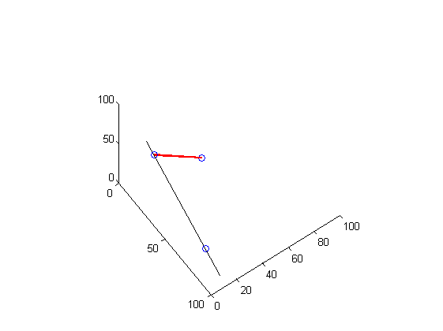
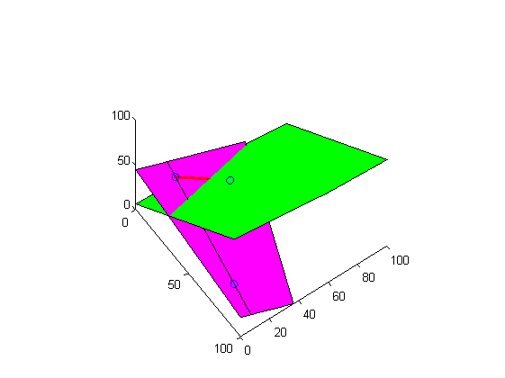

Contents
function demoGeom3d(varargin)
%DEMOGEOM3D Demo of geom3d basic processing % % Usage: % demoGeom3d % % This demo demonstrates some usage example of the geom3d library. % In particular, it shows how to: % - create shapes like points, edges, lines and plane % - draw these shape on current figure % - compute intersections of lines and planes % - compute lines perpendicular to a plane % % See also % % % ------ % Author: David Legland % e-mail: david.legland@grignon.inra.fr % Created: 2009-06-22, using Matlab 7.7.0.471 (R2008b) % Copyright 2009 INRA - Cepia Software Platform.
Create points and lines
% create some points: points are simply represented by a row vector of 3 % elements. p1 = [10 20 30]; p2 = [80 10 20]; p3 = [20 50 10]; % points can be grouped into arrays to represent point sets points = [p1;p2;p3]; % create a 3D line through 2 points line12 = createLine3d(p1, p2); % an edge is represented by concatenating its vertices edge13 = [p1 p3]; % prepare a figure for drawing figure(1); clf; hold on; axis equal; axis([0 100 0 100 0 100]); set(gcf, 'renderer', 'opengl'); set(gca, 'CameraPosition', [400 -200 800]); % draw all points drawPoint3d(points); % draw the line, with some drawing options (clipping is automatic). drawLine3d(line12, 'color', 'k'); % draw an edge, using a thick stroke and a different color drawEdge(edge13, 'color', 'r', 'linewidth', 2);
Create planes
% create a plane from 3 points plane = createPlane(p1, p2, p3); % draw the plane. Clipping is automatically performed. drawPlane3d(plane); % create a line from a point and a direction vector p0 = [60 60 60]; n0 = [-10 1 10]; plane0 = createPlane(p0, n0); % draw the plane, changing its color drawPlane3d(plane0, 'g');
Compute intersections
% compute intersection between 2 planes line = intersectPlanes(plane0, plane); drawLine3d(line, 'lineWidth', 2); % compute intersection between a plane and a line inter = intersectLinePlane(line12, plane0); drawPoint3d(inter, 'marker', '+', 'markerSize', 10, 'linewidth', 3); % create a line perpendicular to a plane normal = planeNormal(plane); perpLine = [80 60 40 normal]; drawLine3d(perpLine); % compute intersection of line with plane inter2 = intersectLinePlane(perpLine, plane); drawPoint3d(inter2);